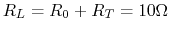
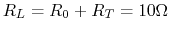
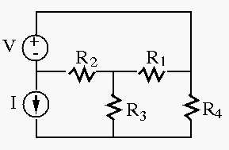
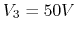

Solution: , .
Solution: The power received by the load (speaker) is

To verify your choice of load resistance, show that the power consumption of the load will always be lower than this maximum when its resistance is either increased or decreased by ten percent.
Solution:
First convert current source to voltage source with
and  . To maximize load power consumption, let
. The current is
. Load power
is
, power loss on transmission line is
When ,
. To maximize load power consumption, let
. The current is
. Load power
is
, power loss on transmission line is
When ,
 ,
When
,
When  ,
,
,
,

Solution:
(a) Convert voltage source on the left to a current source
in parallel with the current source .
The overall current source is therefore:

Note: To simplify the analysis while using node voltage or loop current method, it is preferable to
Solution:

Alternatively, rearrange the components as shown in the figure
above and assume the node between the current and voltage sources
is grounded , then , and denote previous ground by
. We have

We see that the second method is easier. Lesson: if a current source is in a single loop, then the number of equations is reduced by one.
Resolve the problem when  .
.

Solution: